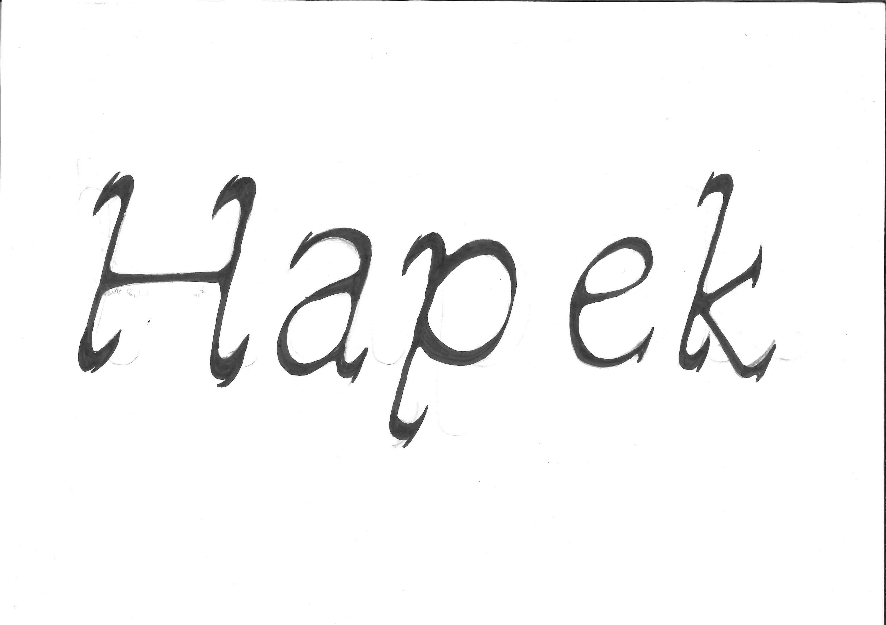
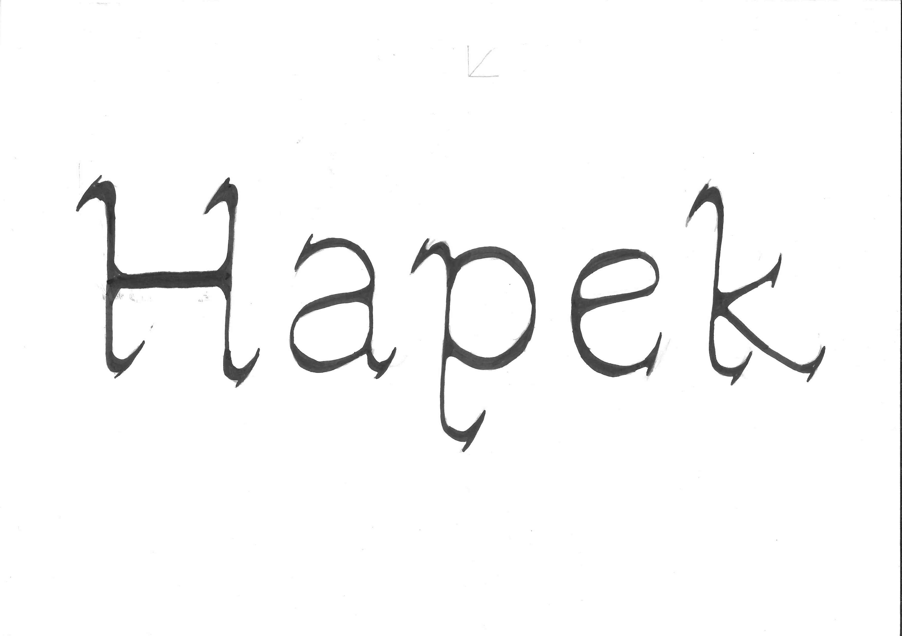
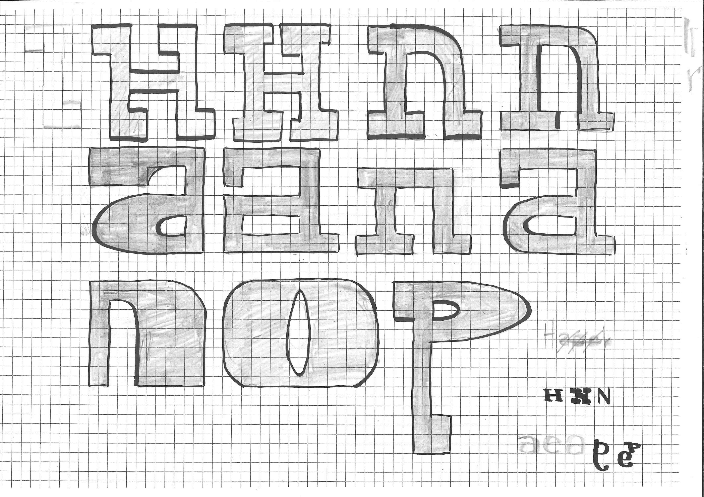
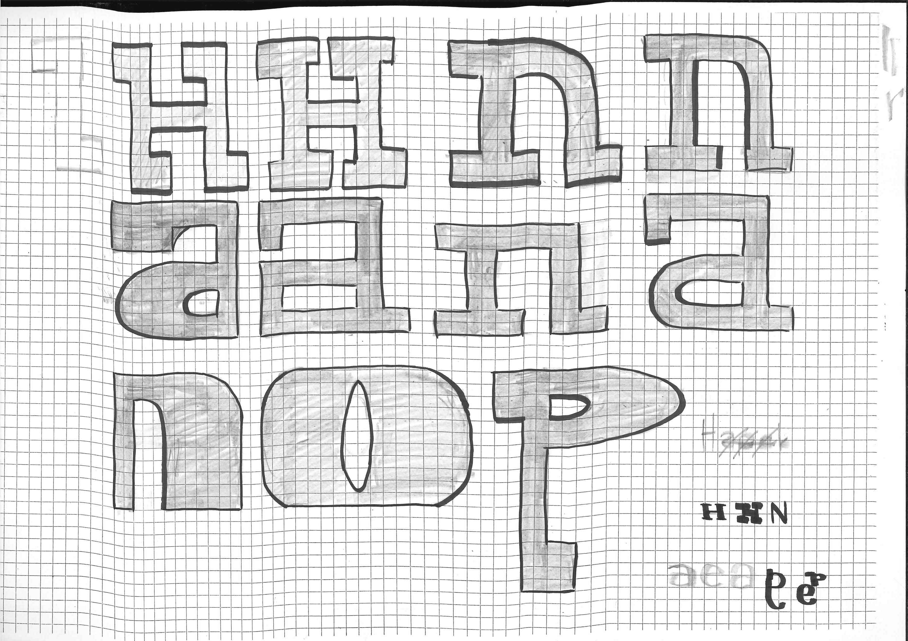
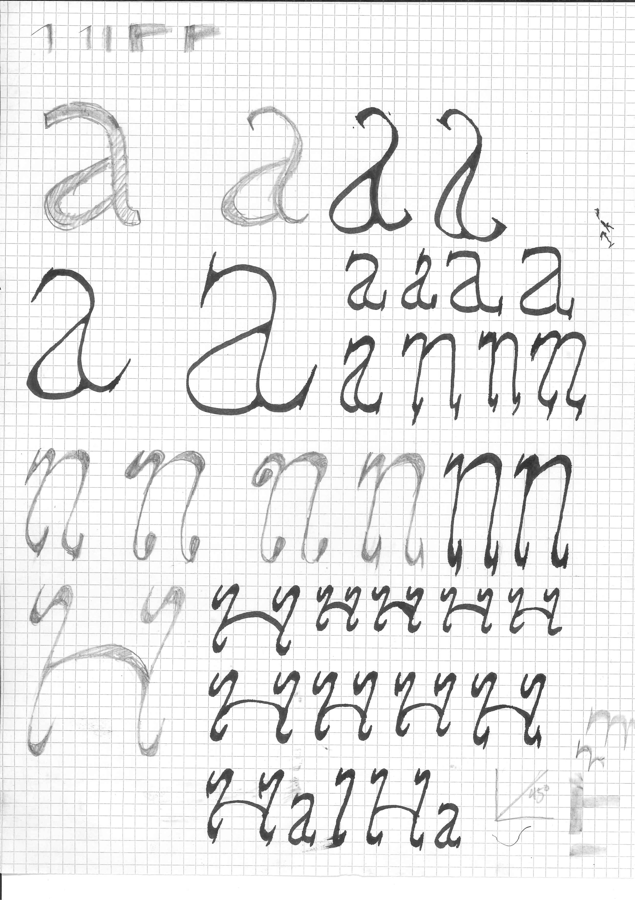
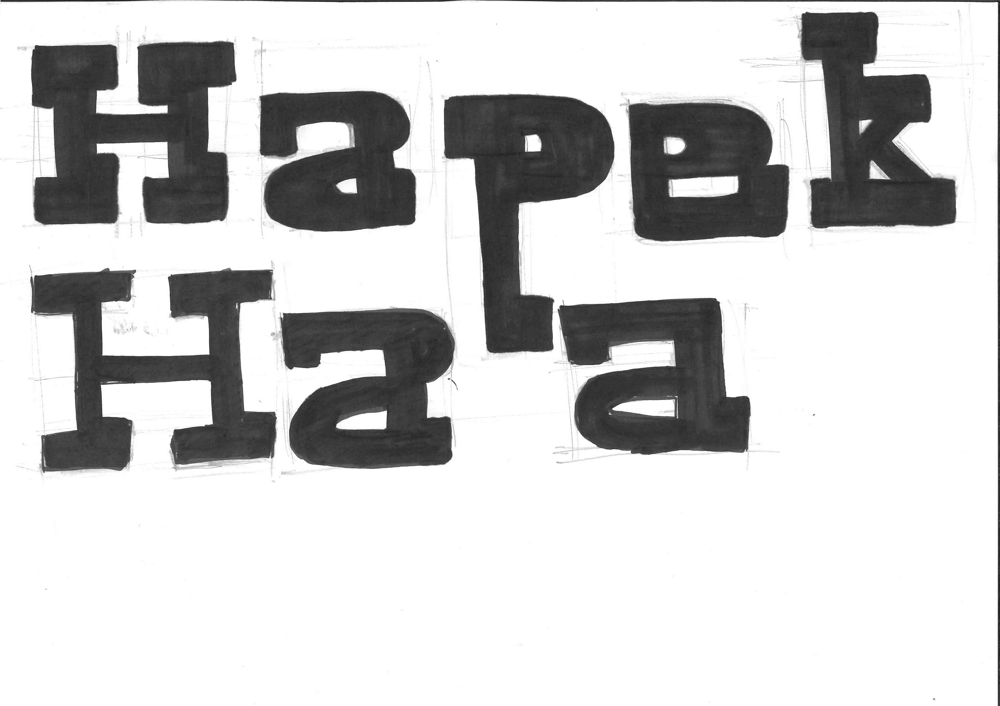
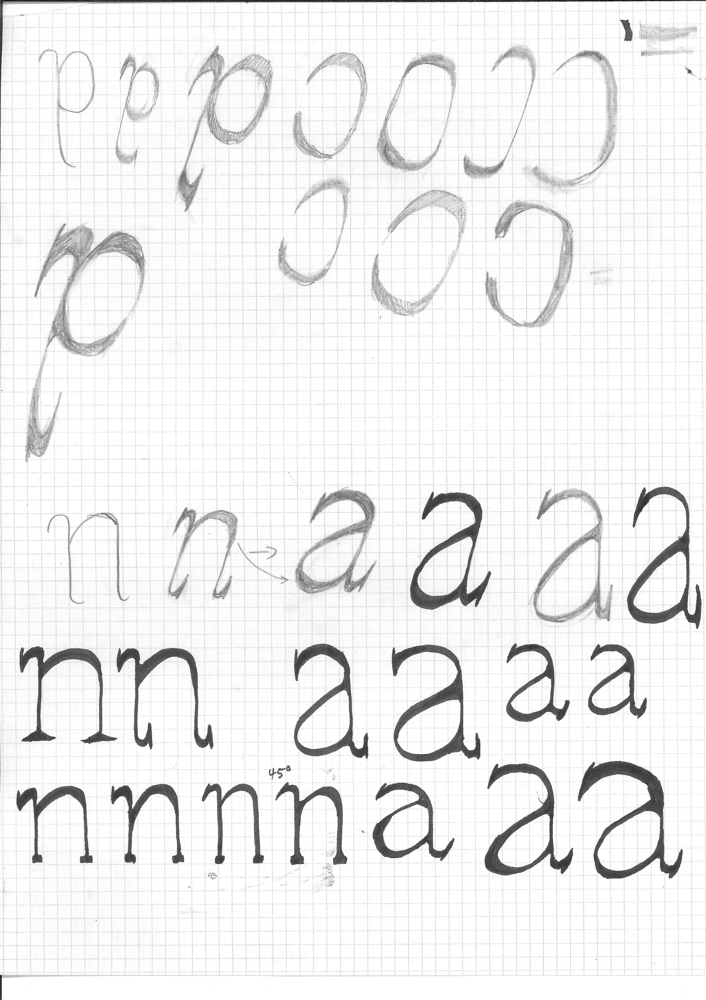

Die Entstehung einer eigenen Schrift

Die Schrift, welche ich designt habe, sieht stark und auffällig aus. Die dicken, dunklen Buchstaben wirken schwer, aber trotzdem spannend. Durch die runden Formen und kleinen Unterschiede merkt man, dass sie von Hand gemacht ist. Sie wirkt gleichzeitig ordentlich und doch ein bisschen frei. Manche Buchstaben erinnern an alte Schilder oder Maschinen, aber sie hat trotzdem etwas Eigenes. Mir gefällt, dass sie kraftvoll aussieht, ohne zu streng zu sein – irgendwie ruhig, aber trotzdem lebendig.







